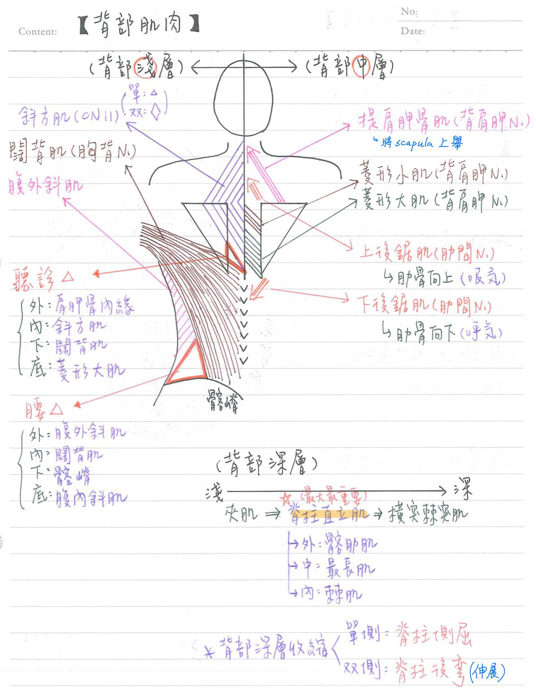

💪🏼 肌肉系統：背部肌肉
背部-淺層：2條
| 肌肉 | 起-止 | 神經支配 | 運動 |
|---|---|---|---|
| 斜方肌 (trapezius m.) | 起：枕骨&脊柱上段 止：鎖骨、肩峰與★肩胛棘 | 副N.(CN11) | 肩胛骨上舉、下壓 頭部後仰、外展 |
| 闊背肌 (latissimus dorsi m.) | 起：胸/腰/薦椎的棘突、髂嵴 止：肱骨結節間溝 | ★胸背N. | 肩部伸展、內收(擴胸) 上臂內旋 |
背部-中層：4條
| 肌肉 | 起-止 | 神經支配 | 運動 |
|---|---|---|---|
| 提肩胛肌(levator scapular m.) | 止：內側上段肩胛骨 | ★★背肩胛N. | 肩胛骨提舉 |
| 大、小菱形肌(rhomboideus m.) | ★背肩胛N. | 肩胛骨內收 | |
| 上後鋸肌(superior serratus m.) | 止：R2~R5的肋角外側 | 肋間N. | ★肋骨向上(吸氣) |
| 下後鋸肌(inferior serratus m.) | 止：R9~R12的肋角外側 | 肋間N. | ★肋骨向下(呼氣) |
★腰三角(lumbar triangle)
- 邊界：(內)闊背肌、(外)腹外斜肌、(下)髂骨嵴
- 底(floor)：腹內斜肌
- ★肌肉較薄⇒可能發生腹部疝氣
★聽診三角(triangle of auscultation)
- 邊界：(外)肩胛骨內緣、 (內)斜方肌、 (下)闊背肌
- 底層(floor)：菱形大肌
- 肌肉較薄，呼吸音可以聽得較清楚

深層：3條(1→2→3)；司★脊柱之各種動作
| 肌肉 | 起-止 | 運動 |
|---|---|---|
| 夾肌(Splenius m.) =棘突橫突肌(spinotransversales m.) | 上：頭夾肌 下：頸夾肌 | |
| 脊柱直立肌(erector spinae m.) =★★豎脊肌 [雞雞咖長] | 外側：髂肋肌(m iliocostalis)：分腰、 胸、頸髂肋肌；★[110-1]不附著到頭骨 中間：最長肌 (m longissimus)：分胸、頸、頭最長肌 內側：棘肌(m spinalis)：分胸、頭、頭棘肌 | ★最大&最重要的背部深層肌肉 |
| ★橫突棘突肌(transversospinales m) [旋轉到一半裂開] | 較淺：半棘肌(m semispinalis)：跨距 ≥5脊椎；分胸、頸、頭半棘肌 中間：多裂肌(m multifidus) : 跨距=2~4脊椎 最深：旋轉肌(m rotatores)：跨距=1脊椎；分腰、胸、頸旋轉肌 | 單側收縮：脊柱側屈 (同側) 雙側收缩：脊柱後彎(伸展) |
📖 書本補充：與筆記不同或筆記沒寫到的地方
⚠️
以下為對照書本後整理，筆記原文未更動。標「筆記 vs 書」的是兩邊寫法不同、建議回頭確認的地方。
背部肌肉的分層（p.133–134）
- 書先分外在肌（位在背部、但作用在上肢或呼吸）與內在肌（背部本身的肌肉，作用也在背部／中軸）。
- 筆記 vs 書：分層歸類不同。筆記把提肩胛肌、大小菱形肌和上下後鋸肌都放在「中層」；書上把斜方、闊背、提肩胛、菱形大小肌都列為淺層（作用＝上肢運動），中層只有上、下後鋸肌（作用＝呼吸）。深層（內在肌）＝頭夾肌、豎脊肌、橫突棘肌。
- 神經來源：外在肌（淺層＋中層）都來自脊神經的腹枝（淺層＝臂神經叢分支／副N，中層＝肋間N）；深層內在肌來自脊神經的背枝（dorsal rami），沒有個別的名稱。
- 豎脊肌由內往外：棘肌 → 最長肌 → 髂肋肌（與筆記外→內的寫法順序相反，內容一致）。
- 書的提示：內在肌的其他肌肉不建議背。
背部的外在肌（p.135）
- 斜方肌：起自上項線、枕外隆凸、項韌帶、C7–T12 棘突；止於鎖骨外側 1/3、肩峰及肩胛棘；作用＝提高、下壓及縮回肩胛骨、旋轉肩胛骨。（筆記寫「頭部後仰、外展」，書的表沒有列這兩項。）
- 闊背肌：起自 T6–T12 棘突、胸腰筋膜、髂嵴、第 9–12 肋骨；止於肱骨結節間溝之底部；作用＝伸展、內收及內旋肱骨（攀岩肌）。
- 提肩胛肌：起自 C1–C4 的橫突（筆記此格空白）；止於肩胛骨內側緣和上角；作用＝上提肩胛骨。
- 菱形大小肌：起自項韌帶及 C7–T5 棘突；止於肩胛骨內側緣；作用＝縮回及旋轉肩胛骨。
- 後鋸上、下肌：起自椎骨棘突、止於肋骨；上＝提起肋骨，下＝下壓肋骨。書的提示：它們的起點與止點都在中軸骨。
- 聽診三角：肩胛骨內側緣、斜方肌下外側、闊背肌上緣所夾的區域（與筆記一致）。
📝 書中歷屆考題（點選答案作答）
103-2-26p.136
背部聽診三角 (triangle of auscultation) 的三個邊由下列那些構造形成？
💡 選項 B 是腰三角的邊界。
104-1-25p.136
下列何者受損最可能導致斜方肌 (trapezius) 無力，肩膀下垂，手臂無法高舉過頭？
105-2-26p.136
下列何者不是豎脊肌 (erector spinae) 的一部分？
💡 多裂肌屬於橫突棘肌群。
107-1-10p.136
下列哪些肌肉與肋骨連結且與呼吸有關？
💡 A、B 與上肢運動有關，D 與頭頸部運動有關。
110-1-31p.136
背部中何者不向上附著到頭骨？
💡 豎脊肌中只有髂肋肌沒有延伸到頭部，名稱就說明它只到肋骨。